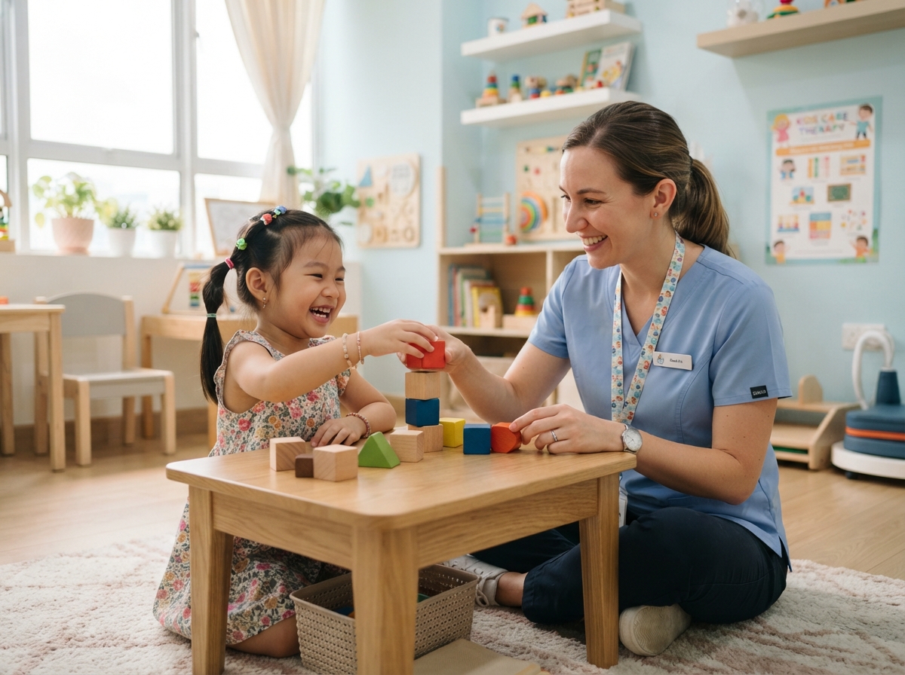
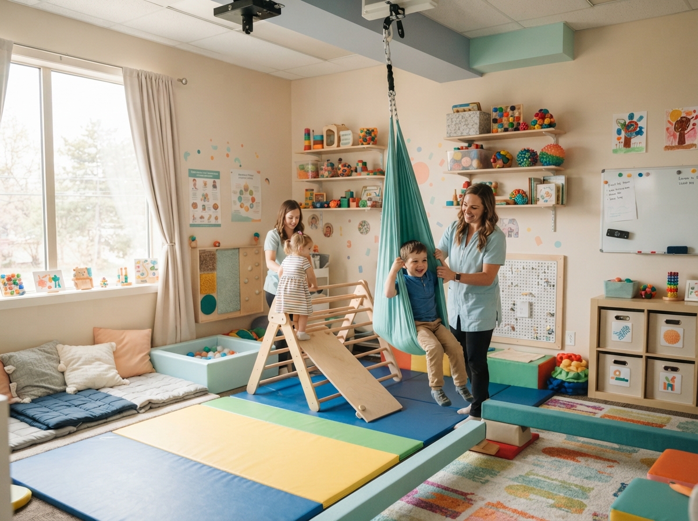
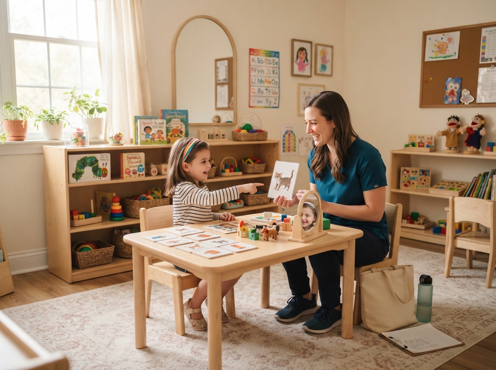
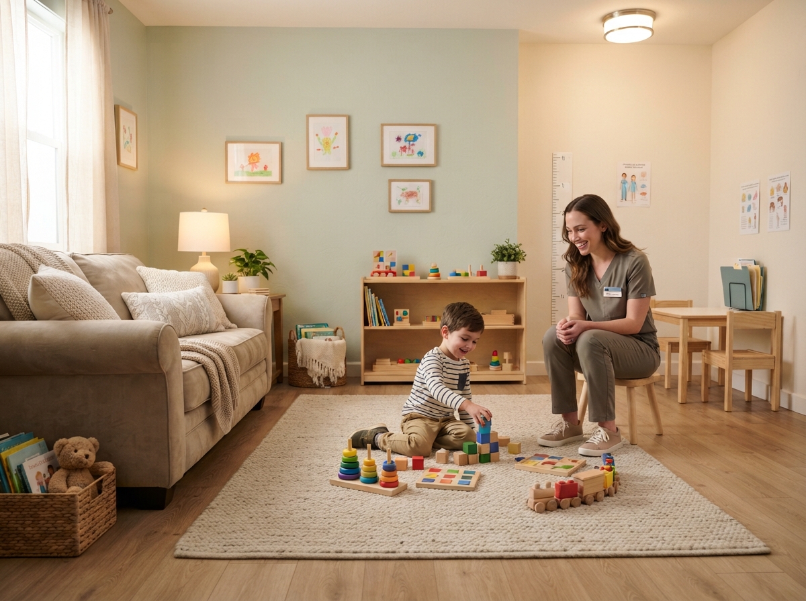

Ketahui Kebutuhan Tumbuh Kembang Anak Anda Hari Ini.
Tanpa antrean berbulan-bulan. Layanan terpadu Terapi ABA, Wicara, dan Okupasi dengan pemantauan data transparan terintegrasi langsung untuk ketenangan pikiran orang tua.

Mengapa Ratusan Orang Tua Mempercayakan Buah Hatinya Kepada Kami?
Pendekatan holistik yang dirancang secara personal dan berorientasi jangka panjang untuk setiap tahapan usia.
Terapi Terintegrasi Komprehensif
Layanan menyeluruh meliputi Terapi ABA (Perilaku), Wicara, dan Okupasi dalam satu roadmap terpadu tanpa penanganan yang terpisah-pisah, sehingga kemajuan stimulasi lebih terarah.
Parent Dashboard Terbuka
Pemantauan progres anak secara berkala dan real-time langsung melalui smartphone atau laptop Anda tanpa jeda informasi, memberi rasa tenang bagi Ayah dan Bunda.
Terapis Tersertifikasi & Hangat
Didukung oleh psikolog anak dan tenaga terapis ber-STR Kemenkes resmi, mengutamakan pendekatan bermain yang menyenangkan tanpa rasa takut bagi si kecil.
Program Terapi Spesifik & Terarah
Metode klinis teruji untuk mendukung kemandirian gerak, komunikasi aktif, dan ketenangan sensorik buah hati Anda.
Asesmen Awal Komprehensif
Evaluasi mendalam oleh psikolog anak dan tim multidisiplin untuk mengidentifikasi potensi, milestones, serta hambatan perkembangan sejak dini.
- Diagnosis komprehensif motorik, wicara, dan kognitif
- Rekomendasi kurikulum terapi individual tertulis
- Sesi evaluasi dan diskusi mendalam 1-on-1 dengan orang tua
Terapi Perilaku (ABA)
Program penguatan perilaku adaptif positif, fokus perhatian, kepatuhan instruksi sederhana, serta regulasi emosi dan tantrum dengan pendekatan kasih sayang.
- Pendekatan positive reinforcement ramah anak
- Melatih rentang fokus dan pemahaman instruksi
- Stimulasi kesiapan adaptasi di lingkungan sekolah
Terapi Wicara (Speech Therapy)
Membantu stimulasi kejelasan artikulasi kata, penambahan kosa kata aktif, komunikasi dua arah, dan penguatan otot rongga mulut untuk anak dengan keluhan speech delay.
- Stimulasi bicara aktif untuk keterlambatan bicara
- Koreksi artikulasi fonem dan kejelasan pengucapan
- Terapi oral-motorik untuk kesulitan makan (picky eater)
Terapi Okupasi (Occupational Therapy)
Melatih integrasi sensori motorik, regulasi keseimbangan fisik, stimulasi taktil, serta kemandirian anak dalam aktivitas makan, memakai baju, dan memegang pensil.
- Regulasi integrasi sensori vestibular dan taktil
- Kekuatan genggaman jemari dan koordinasi motorik halus
- Kemandirian aktivitas harian (ADL) secara terstruktur
3 Langkah Mudah Menuju Tumbuh Kembang Optimal
Prosedur terstruktur yang ramah anak dan sepenuhnya transparan bagi keluarga.
Asesmen Psikologi & Observasi
Pemeriksaan menyeluruh milestone motorik, kognitif, dan wicara bersama psikolog anak di ruang observasi ramah anak yang nyaman dan penuh mainan edukatif.
Penyusunan Roadmap Personal
Tim klinis merumuskan target perkembangan spesifik buah hati bersama orang tua, menentukan kombinasi jadwal terapi yang tepat dan proporsional.
Sesi Terapi & Evaluasi Berkala
Sesi terapi 1-on-1 interaktif yang selalu tercatat dalam laporan harian, lengkap dengan evaluasi milestone berkala setiap 12 sesi bersama orang tua.
check_circle Semua catatan sesi dapat langsung diakses orang tua di hari yang sama via Parent Dashboard
Pantau progres anak Anda secara real-time dari mana saja
Orang tua tidak perlu lagi bertanya-tanya apa yang terjadi di dalam ruang terapi. Akses catatan harian terapis, grafik milestone, dan kurva kemandirian si kecil langsung dari genggaman Anda.
Rafa Al-Fatih (3 Th 8 Bln)
Terapi Wicara & Sensori Okupasi“Ananda Rafa sangat antusias merespon 8 instruksi kata baru dan berhasil menyusun balok tanpa rasa jenuh.”
Terapis: Kak Sarah Novita, S.Psi.Fasilitas Ramah Anak & Nyaman Seperti di Rumah
Ruang terapi dirancang khusus dengan standar higienis dan terapeutik internasional agar anak merasa riang dan bebas dari rasa cemas.

Sensori IntegrasiRuang Sensori Integrasi (SI)
Lengkap dengan sensory swing (ayunan terapi), matras pengaman bertaraf medis, dan tactile wall untuk melatih regulasi keseimbangan motorik si kecil.

Wicara & BahasaRuang Terapi Wicara & Artikulasi
Meja ergonomis kayu ramah anak, cermin artikulasi interaktif, flashcards kosakata, dan instrumen oral motor dalam ruangan yang tenang bebas kebisingan.

Konsultasi KeluargaRuang Observasi & Konsultasi Ortu
Dilengkapi area bermain Montessori dan sofa keluarga yang nyaman untuk diskusi santai 1-on-1 bersama psikolog anak dan tim terapis.
Pilihan Paket Asesmen Awal yang Transparan
Tanpa biaya tersembunyi. Dapatkan evaluasi objektif dan rencana penanganan berbasis bukti klinis.
Ingin Cek Mandiri di Rumah Dahulu?
Gratis & EmpatikGunakan platform skrining mandiri 3-5 menit berbasis Denver II & M-CHAT-R/F dengan kalkulator usia koreksi prematur dan roadmap stimulasi 14 hari di rumah.
Screening Tumbuh Kembang Dasar
Ideal untuk deteksi dini tanda-tanda keterlambatan usia 1-4 tahun
- check_circle Sesi observasi & skrining motorik-wicara 45 menit
- check_circle Kuesioner Denver II / M-CHAT terstandar
- check_circle Ringkasan hasil skrining tertulis dalam format PDF
- check_circle Konsultasi pengantar 15 menit dengan tim terapis
Asesmen Komprehensif Multidisiplin
Pemeriksaan mendalam holistik oleh Psikolog Anak & Terapis Spesialis
- check_circle Sesi observasi interaktif 90 menit (Ruang Sensori & Bermain)
- check_circle Pemeriksaan 3 aspek: Motorik Sensori, Wicara, & Perilaku Adaptif
- check_circle Laporan diagnosis klinis lengkap & Roadmap Terapi Personal tertulis
- check_circle Konseling mendalam 1-on-1 dengan Psikolog Anak (30 menit)
- check_circle Akses gratis 1 bulan Akun Parent Dashboard Real-time
Pertanyaan Seputar Layanan Harapanku
Temukan jawaban atas hal yang paling sering ditanyakan oleh Ayah dan Bunda sebelum memulai proses asesmen.
Punya pertanyaan khusus mengenai si kecil?
Care Coordinator kami siap berdiskusi santai dan memberikan panduan awal.
Beri Hadiah Terbaik untuk Masa Depan Buah Hati Anda
Intervensi sedini mungkin membawa dampak perubahan optimal bagi kemandirian dan kebahagiaan anak. Amankan jadwal observasi awal bersama tim dokter dan psikolog kami hari ini.
schedule Slot asesmen tatap muka dibatasi per hari demi menjaga keheningan & kenyamanan anak.